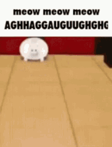
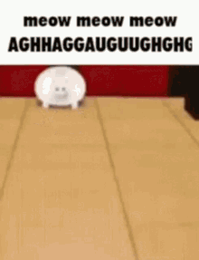

There's not too much to know about me (I'm not particularly interesting). I have an older sister who's also in SITHS, Irene Dong (who's leagues smarter than I am, except in compsci probably), moved from Brooklyn to Staten Island in 2015, and my birthday is on August 18th (which is the same as Percy Jackson from Percy Jackson and the Olympians by Rick Riordan! (Yes, I'm a nerd. Mythology (especially Greek) and Rick Riordan is awesome.)) Also, I truly did choose to take Javascript with you because you were the teacher, as I've heard how great of a teacher you are (and just from these first few days, I can safely say that they were correct). As much as I like Dr. Frusci, he babied us through Python, leaving me feeling that I didn't really learn all that much (no offense to him though! he's an awesome guy), which I didn't want again. I'm sure that this class will be challenging, but I am completely up for that, and that even one of the reasons why I chose to take this class. Just wanted to let you know :] Unfortunately, I don't think this is what you meant by "A short paragraph", so hopefully you'll forgive me and not dock off any points. Sorry!
If you're ever in the mood to read about even more stuff that (probably) won't impact your life in any way, here's my absolute favorite Wikipedia article (or more accurately, a collection of articles.)
A wikipedia link that redirects to Wikipedia's official list of Unusual Articles! Perfect for if you want to kill some time reading about random things.A couple of the articles that I think are worth reading if you don't want to scroll through the entire list, with the descriptions as written on the article.
 
